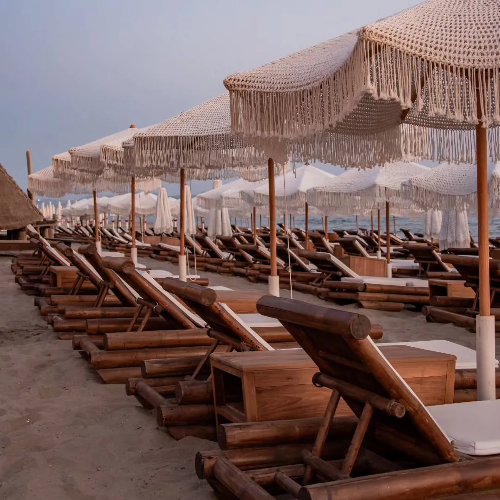
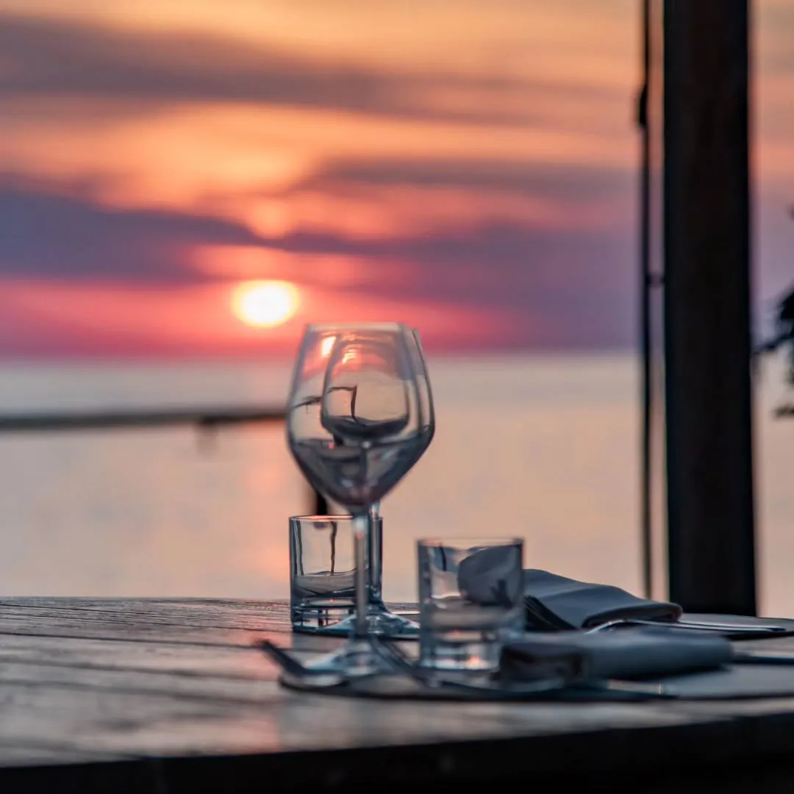
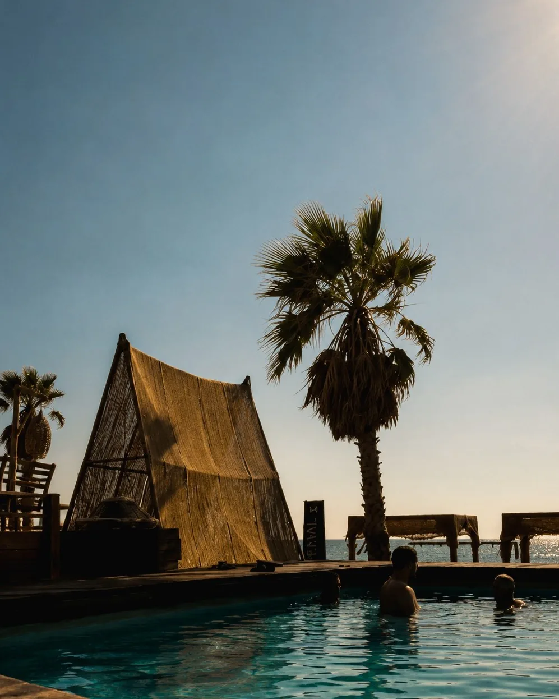

Un posto, due giornate
Scegli il tuo momento: il relax della spiaggia o la magia della sera. Cambia mondo dai tasti qui sopra.

Spiaggia & Piscina
Lettini in bambù, ombrelloni in macramè, sabbia fine per le famiglie e una piscina per i grandi.

Cena & Serate
Menu mediterraneo di pesce, carta dei vini e aperitivo mentre il sole scende sul mare.
La spiaggia privata
Due aree, un solo mare. Mare per tutti, piscina per i maggiorenni. Prenota il tuo posto su WhatsApp.
Il lido in immagini
Dalla sabbia al tramonto: com'è davvero il Baracchino Rosso.
Nati sul mare di Castel Volturno
Il Baracchino Rosso è cresciuto sul Litorale Domitio come un lido con due anime. Di giorno è spiaggia: sabbia fine, fondale basso, ombrelloni in macramè e postazioni in bambù dove le famiglie passano ore senza pensieri, e una piscina per chi cerca solo sole e relax.
Quando il sole scende, cambia tutto. La terrazza sul mare diventa ristorante e aperitivo: cucina mediterranea di pesce, una carta dei vini vera, musica e serate sotto il cielo. Lo stesso posto, un'altra magia.
Un design curato in ogni dettaglio, uno staff che ti riconosce e un tramonto che ogni sera vale il viaggio. Questo è il Mediterranean Club.

Vieni a trovarci
Pranzo in spiaggia
Due modi di pranzare: il take away veloce da portare sotto l'ombrellone, oppure il menù mediterraneo di pesce servito al tavolo. Tra un tuffo e l'altro, come preferisci.
I nostri piatti
Fresco, di mare, fatto al momento. Un assaggio di quello che porti a tavola.
Lettini, ombrelloni & cabine
Le nostre serate
Aperitivo in poltrona, cocktail, musica e cena vista mare. Il Baracchino cambia anima.
Cena sul mare
Cucina mediterranea di pesce e una carta dei vini pensata per il tramonto. Prenota il tavolo e lasciati sorprendere dal cielo.
Serate & eventi
Aperitivi, musica dal vivo e feste al tramonto.